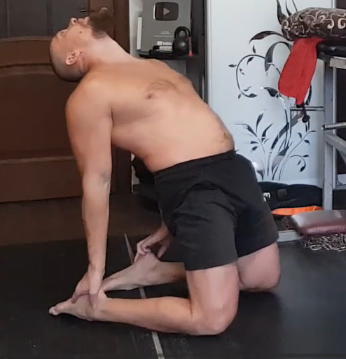
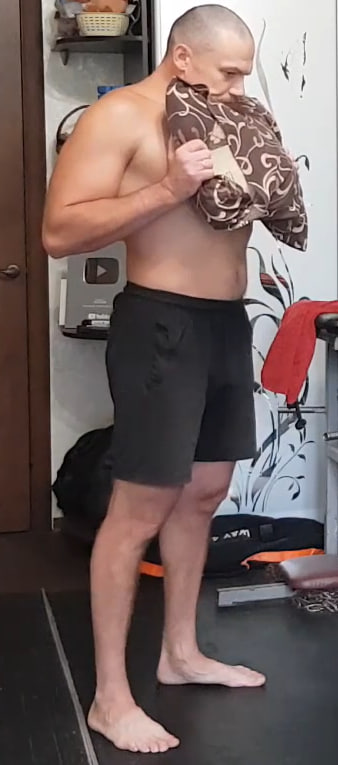
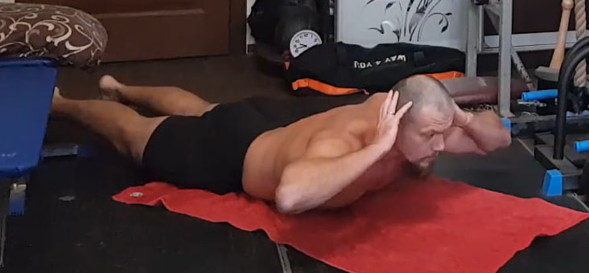
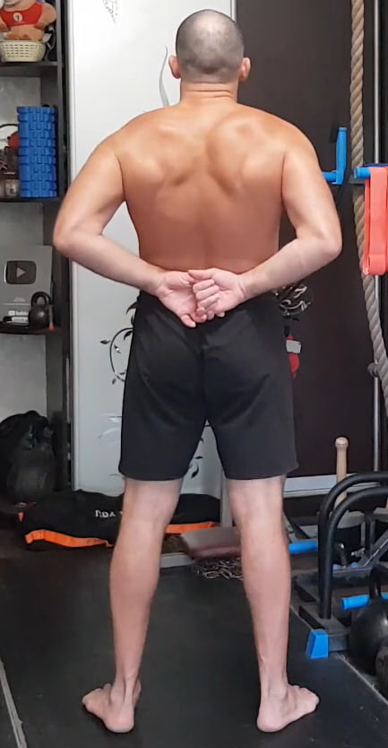
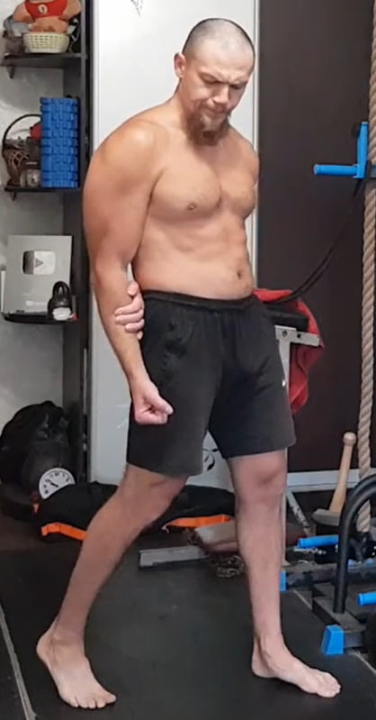
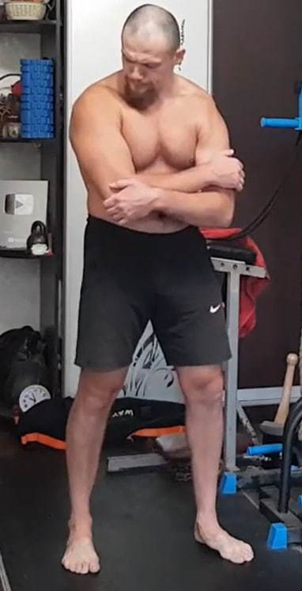
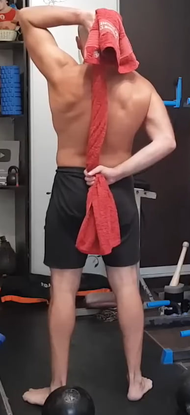
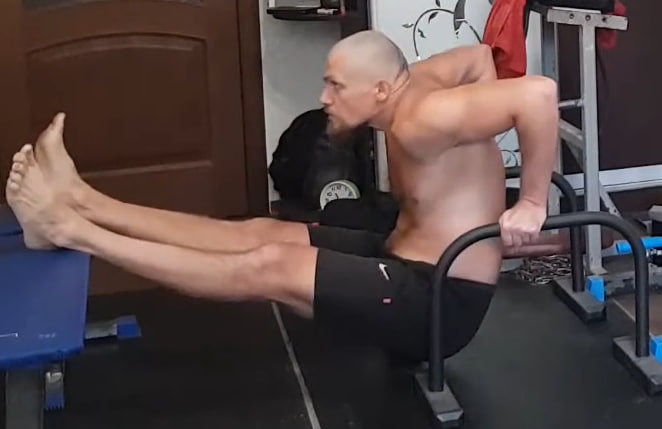
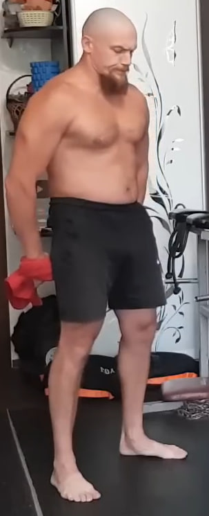
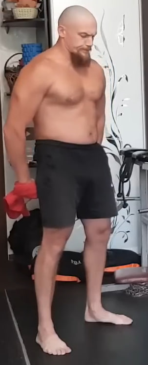

1. Extensión profunda de cuello y mandíbula desde rodillas
Arrodíllate y siéntate sobre los pies. Si la movilidad de los tobillos aún no es suficiente, puedes mantener los dedos de los pies apoyados en el suelo; la forma ideal es con los empeines completamente apoyados. Desde ahí reclina el torso hacia atrás y apoya las manos en los talones. Lleva la cabeza al máximo hacia atrás.
Abre la boca tan ampliamente como puedas y ciérrala de nuevo con la misma tensión, sin cambiar la posición del cuerpo. Realiza 10 aperturas y cierres de la mandíbula en esta posición, sintiendo cómo trabajan el cuello y la musculatura alrededor de la cara. Después vuelve con cuidado hacia adelante, inclina la cabeza y pega la barbilla al pecho, manteniendo el estiramiento de la parte posterior del cuello durante 10 segundos. Este ciclo cuenta como una repetición. Completa 10 repeticiones.
2. Isometría de cuello con almohada bajo el mentón
Coloca una almohada o una toalla enrollada entre el mentón y la parte alta del pecho. La boca permanece cerrada, pero sin apretar los dientes. Sujeta la almohada con ambas manos y tira de ella hacia abajo con fuerza, mientras el mentón se opone y no permite que el objeto se deslice.
La tensión debe sentirse en la parte frontal del cuello y en los músculos cervicales profundos, no en la mandíbula. Mantén la posición durante 10 segundos, respira con calma, relaja brevemente y repite. Realiza 10 repeticiones.
3. Elevaciones de espalda con pausa isométrica (solo torso)
Túmbate boca abajo sobre la esterilla con las piernas estiradas y los pies apoyados en el suelo. Coloca las manos detrás de la cabeza, con los codos abiertos hacia los lados. Desde esta posición eleva el pecho, los hombros y la parte superior del torso lo más que puedas, manteniendo las piernas en el suelo pero activas y estiradas.
No busques altura a costa de arquear la zona lumbar: la sensación principal debe estar en la parte alta de la espalda y entre las escápulas. En la posición alta haz una pausa isométrica de 10 segundos, respirando de forma tranquila y sin relajar la tensión. Después baja de forma controlada. Realiza 10 repeticiones.
4. Inclinaciones hacia los pies

Colócate de pie con los pies al ancho de las caderas y las piernas completamente rectas. Desde esta posición inclina el torso hacia adelante empujando la cadera hacia atrás, no hacia abajo, y baja las manos hacia el suelo o los pies.
Debes sentir un estiramiento profundo en la parte posterior de las piernas y la espalda. Después vuelve a erguirte estirando la columna vértebra por vértebra. Realiza 10 repeticiones sin rebotes y sin doblar las rodillas.
5. Peso muerto isométrico bloqueado

Ponte de pie con los pies al ancho de los hombros y las rodillas ligeramente flexionadas. Inclina el torso hacia adelante manteniendo la espalda recta y firme, sin redondearla. Coloca las manos justo por encima de las rodillas o en la parte alta de las tibias, creando un punto de anclaje.
Desde esta posición intenta levantar el torso hacia arriba como si fueras a iniciar un peso muerto real, pero las manos bloquean el movimiento y no te permiten subir. Se crea así una fuerte tensión isométrica en la zona lumbar, glúteos e isquiotibiales. Mantén la contracción durante 10 segundos y repite 10 veces, respirando de forma tranquila.
6. “Aplastar el coco” entre las escápulas
Ponte de pie con la espalda recta y los pies al ancho de las caderas. Entrelaza las manos detrás de la espalda, justo por encima de la cintura, y lleva los codos hacia atrás y ligeramente hacia afuera. Imagina que tienes un coco entre las escápulas y que debes no solo sujetarlo, sino romperlo usando la fuerza de la parte media y alta de la espalda.
La clave es cerrar las escápulas hacia adentro sin arquear la zona lumbar ni levantar los hombros. Mantén la contracción máxima durante 10 segundos, relaja brevemente y repite 10 veces.
7. Isometría del deltoides anterior
Colócate de pie con una pierna adelantada para mayor estabilidad y el brazo de trabajo ligeramente flexionado frente al cuerpo. Con la mano contraria sujeta el antebrazo o la muñeca del brazo de trabajo creando un bloqueo firme.
El brazo de trabajo intenta salir hacia adelante y ligeramente hacia arriba, mientras la mano de apoyo no le permite avanzar ni un milímetro. La tensión debe concentrarse en el deltoides anterior, en la parte frontal del hombro. Mantén la contracción durante 10 segundos y repite 10 veces por cada lado.
8. Isometría para el deltoides posterior
Coloca el brazo de trabajo frente al cuerpo y abrázalo con la otra mano sujetando firmemente el codo o el antebrazo. El brazo de trabajo intenta llevar el codo hacia atrás y hacia afuera, mientras la mano que abraza impide por completo el movimiento.
La tensión isométrica se concentra en el deltoides posterior, la parte alta de la espalda y la zona interescapular. Mantén la contracción durante 10 segundos y repite 10 veces por cada lado.
9. Rotación interna del hombro con toalla
Toma una toalla o cinturón que no se estire y pásalo detrás de la espalda, con un brazo arriba detrás de la cabeza y el otro abajo cerca de la cintura. La mano de arriba tira hacia arriba y la mano de abajo tira hacia abajo, ajustando la posición hasta que la tensión se sienta debajo de la escápula, no en el tríceps.
Mantén el pecho abierto y los hombros alejados de las orejas. Conserva la tensión durante 10 segundos, descansa 5 segundos y cambia la posición de los brazos. Repite hasta completar 10 repeticiones alternando arriba y abajo.
10. Fondos con piernas elevadas en superficie paralela
Colócate entre dos taburetes, barras paralelas o cualquier soporte firme que permita apoyar las manos a los lados del cuerpo. Extiende las piernas al frente y rectas, manteniendo el cuerpo en una línea rígida. Desde esta posición baja el cuerpo flexionando los codos hacia atrás, sin dejar que los hombros colapsen, y luego empuja hacia arriba hasta volver a la posición inicial sin bloquear los codos.
El movimiento es corto, controlado y muy tenso, con una fuerte activación del tríceps, deltoides y pecho inferior. Mantén las piernas elevadas durante todo el ejercicio y realiza 10 repeticiones.
11. Flexiones clásicas

Colócate en posición de plancha con las manos apoyadas en el suelo a la anchura de los hombros y el cuerpo formando una línea recta desde la cabeza hasta los talones. Desde ahí dobla los codos hacia atrás y baja el pecho hacia el suelo en aproximadamente 4 segundos, manteniendo el abdomen y los glúteos tensos.
Empuja el suelo y sube en 1 segundo hasta casi extender los brazos, sin bloquear los codos. Realiza 10 flexiones. Si es demasiado difícil, apoya las rodillas manteniendo el cuerpo en línea recta desde las rodillas hasta la cabeza.
12. Rotura en tres puntos con toalla

 

Utiliza una toalla, cinturón de kimono o cinta que no se estire. Sujétala con ambas manos dejando unos 40–50 cm entre ellas. Trabajarás en tres posiciones: con los brazos al frente a la altura del pecho, por encima de la cabeza y abajo frente a los muslos.
En cada posición intenta “romper” la toalla tirando con la máxima fuerza hacia los lados. Usa el esquema de 3–6–3 segundos: entra en la tensión durante 3 segundos, mantén la contracción máxima 6 segundos y libera la fuerza de forma controlada durante otros 3 segundos. Pasa enseguida a la siguiente posición. Las tres posiciones consecutivas cuentan como un ciclo. Completa 10 ciclos.
13. Colgamientos parciales con apoyo en los pies

Agarra una barra o cualquier soporte sólido que no pueda romperse. No cuelgues todo tu peso como en una dominada: deja parte del peso sobre los pies para mantener un estiramiento seguro y controlado. Relaja los hombros y permite que la columna se alargue de forma natural; si es posible, inclina ligeramente la pelvis hacia adelante para mejorar la descompresión de la espalda. Mantén la posición durante 10 segundos y repite 10 veces.
14. Inclinaciones hacia los pies (repetición)

Repite el mismo ejercicio de inclinaciones del punto 4: de pie, con las piernas rectas, inclina el torso hacia adelante empujando la cadera hacia atrás y baja las manos hacia los pies o el suelo. Vuelve a la posición erguida estirando la columna vértebra por vértebra. Realiza 10 repeticiones.
15. Saltos en posición de plancha


Comienza en posición de plancha con los brazos extendidos y el abdomen firme. Desde ahí salta con ambos pies hacia adelante, acercando las rodillas al pecho, y luego salta de nuevo hacia atrás para volver a la plancha. Mantén la cadera estable y evita que la zona lumbar se hunda. Realiza 10 repeticiones con un ritmo elástico y continuo.
16. Burpees sin flexiones


Colócate en posición de plancha con las manos bajo los hombros y el cuerpo en línea recta. Desde ahí salta llevando los pies hacia adelante cerca de las manos y, sin detenerte, realiza un pequeño salto vertical con el cuerpo erguido. Aterriza suave, vuelve a colocar las manos en el suelo y salta hacia atrás a la plancha. Este ciclo cuenta como una repetición. Completa 10 repeticiones.